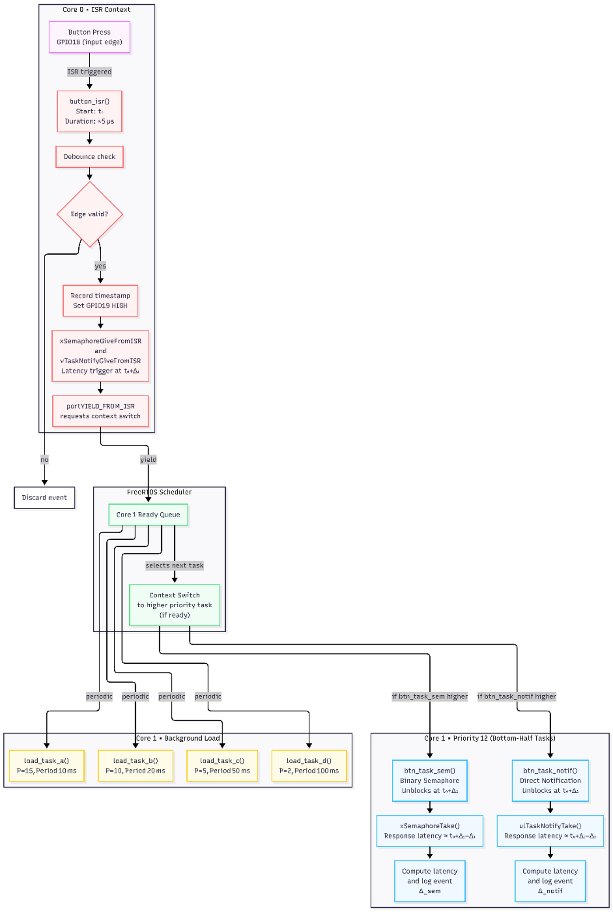
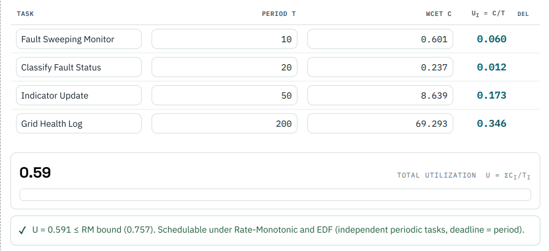

Project Overview
This project demonstrates a real-time embedded fault-monitoring system designed for use in power infrastructure. The system uses multiple real-time tasks to monitor operating conditions, process system data, detect abnormal events, and report fault information.
Task priorities, deadlines, worst-case execution-time measurements, interrupt-based fault detection, and protected communication methods are used to support dependable and timely system operation.
System Architecture
The architecture diagram shows the main system components and explains how data and control signals move between the input, real-time tasks, shared resources, fault monitor, and system output.

Task Table and WCET Evidence
The task table identifies each real-time task, its purpose, execution period, deadline, priority, and measured worst-case execution time. These values are used to evaluate whether the system can complete its required work before each deadline.

Hazard Analysis
The hazard analysis identifies possible failures, their effects, the methods used to reduce risk, and the related safety-standard clauses. A major concern is missed or delayed fault recognition, which could prevent the system from responding to a dangerous condition in time.
The system reduces this risk through interrupt-based fault detection, high-priority monitoring, task preemption, and real-time event logging.
View Hazard AnalysisProject README
The README contains the complete project description, build and run instructions, source-code information, system design choices, and additional project documentation.
View Project README